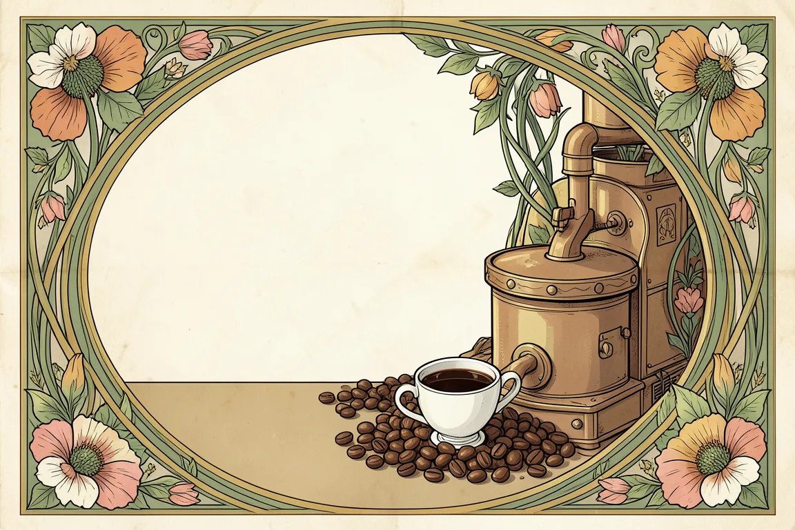

grafiske retninger · 1890–1910 · også: Jugendstil, Liberty Style, Piskesnertstil
Piskesnertkurver, planteformer og håndtegnede bokstaver inne i innrammede paneler. Stilen kom fra Paris, Brussel, Wien og Glasgow rundt 1900. På skjerm passer den for arv, håndverk og botaniske merkevarer.

Kjerneidé
Ornamentet er ikke pynt lagt oppå en ting: plantens linje vokser inn i sidens struktur.
Designprinsipper
Tegn hver panelramme med en buet kant: hjørneradius 24px til 48px, eller en buet topp på 50 % av bredden.
Før én sammenhengende organisk linje (strek 2px til 3px) langs kanten av hver seksjon, og la den ende i et blad, en knopp eller en piskesnertkrøll.
Bruk en dempet naturpalett på 5 farger: mose, salvie, oker, rose og krem. Hold metningen under 45 %.
Sett overskrifter i en displayskrift med flytende, kalligrafisk form på 40px eller større; sett brødtekst i en lesbar old style-serif på 17px til 18px.
Fyll sidebakgrunnen med en mønsterflis på 120px til 240px laget av stilker og kronblader med 8 % dekkevne.
Plasser hero som et høyt panel med forholdet 3:4, innrammet av en kant på 6px til 12px med et blomsterhjørne.
Lag knapper i pillform (radius 999px) med 2px omriss og en bladgrønn fylt tilstand ved hover.
Antimønstre
Rette, rektangulære beholdere med skarpe hjørner
Neon-, primær- eller høymettede farger over 45 %
Geometriske sans-overskrifter
Symmetriske, stive rutenett med like kort
Fotografiske stockbilder uten ramme eller fargetone
Flat dekor uten forbindelse til en plante eller en frihåndslinje